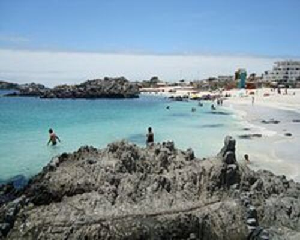
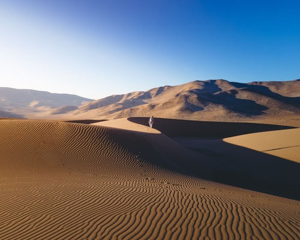
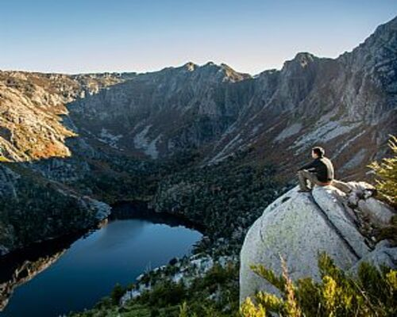
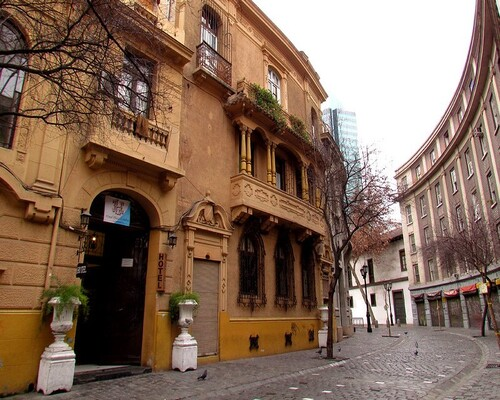
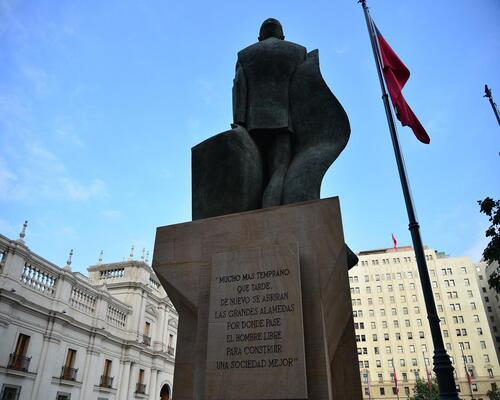
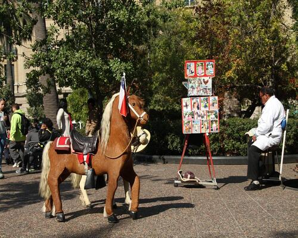
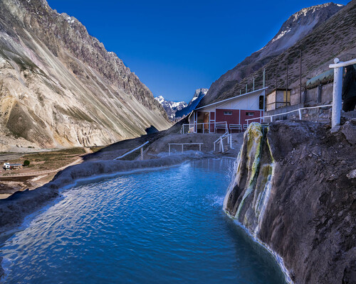
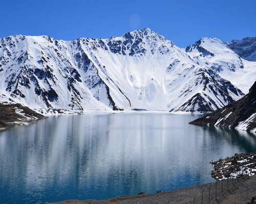

A continuación se muestran rutas turísticas para disfrutar en tus vacaciones por Santiago de Chile
Ruta por el Desierto de Atacama y sus playas
Tipo: Paisajismo
Transporte: Coche
Fecha: 2030-10-30
Hora: 10:00:00
Duración: PT4H
Agencia: Sin agencia
Descripción: Si buscas escapar de la rutina, un viaje por la Región de Atacama es una excelente alternativa porque lo tiene todo: te sorprenderán sus hermosas playas, dunas y sitios históricos.Playa La Virgen de Caldera, conocida por su arena blanca y aguas color turquesa.Este lugar, en medio del desierto, es ideal para ver el fenómeno conocido como Desierto Florido.Después de tomar desayuno en la Playa la Virgen, te desplazarás por el Circuito Costero rumbo al Parque Llanos de Challe, otro lugar ideal para ver el Desierto Florido.
Personas: Se puede ir con niños, para todas las edades
Descripción: Playa La Virgen de Caldera, conocida por su arena blanca y aguas color turquesa.
Coordenadas: -27.089601, -70.848392, 25
Distancia anterior: 10
Galería de Fotografías:

Nombre: Parque Nacional Pan de Azúcar
Descripción: Este lugar, en medio del desierto, es ideal para ver el fenómeno conocido como Desierto Florido.
Coordenadas: -26.149722, -70.650556, 65
Distancia anterior: 128
Galería de Fotografías:

Nombre: Llanos de Challe y olivos centenarios
Descripción: Después de tomar desayuno en la Playa la Virgen, te desplazarás por el Circuito Costero rumbo al Parque Llanos de Challe, otro lugar ideal para ver el Desierto Florido.
Coordenadas: -28.158813, -71.161476, 8
Distancia anterior: 155
Galería de Fotografías:

Ruta por el Centro Histórico
Tipo: Cultural
Transporte: A pie
Fecha: 2030-10-31
Hora: 09:00:00
Duración: PT6H
Agencia: Sin agencia
Descripción: Además de pasear por sus jardines, desde lo más alto donde está situado el famoso castillo de Hidalgo podréis disfrutar de una de las mejores vistas a la ciudad, con una panorámica general hacia la cordillera y el cerro San Cristóbal.Se trata de un edificio muy revelador en cuanto a numerosos acontecimientos relacionados con la dictadura del General PinochetAdemás de la famosa estatua ecuestre de Pedro Valdivia, en la plaza podréis visitar algunos de los edificios más importantes de la ciudad, como el edificio de Correos de Chile y el Museo Histórico Nacional.Los amantes de la historia antigua podéis visitar el Museo Chileno de Arte Precolombino, una joya que alberga numerosas colecciones relacionadas con la diversidad cultural americana, donde destaca su valiosa exposición textil andina con piezas de más de 3.000 años de antigüedad.
Personas: Se puede ir con niños, para todas las edades
Inicio:
Lugar de inicio: Cerro de Santa Lucía
Dirección de inicio: Plaza Pedro de Valdibia, Chile
Nombre: Barrio Paris - Londres y Palacio de la Moneda
Descripción: Se trata de un edificio muy revelador en cuanto a numerosos acontecimientos relacionados con la dictadura del General Pinochet
Coordenadas: -33.442883, -70.653852, 550
Distancia anterior: 1.02
Galería de Fotografías:

Nombre: Plaza de Armas
Descripción: Además de la famosa estatua ecuestre de Pedro Valdivia, en la plaza podréis visitar algunos de los edificios más importantes de la ciudad, como el edificio de Correos de Chile y el Museo Histórico Nacional.
Coordenadas: -33.437763, -70.650517, 560
Distancia anterior: 1.67
Galería de Fotografías:

Nombre: Lastarria, el barrio bohemio de la ciudad
Descripción: Los amantes de la historia antigua podéis visitar el Museo Chileno de Arte Precolombino, una joya que alberga numerosas colecciones relacionadas con la diversidad cultural americana, donde destaca su valiosa exposición textil andina con piezas de más de 3.000 años de antigüedad.
Coordenadas: -33.438102, -70.641079, 588
Distancia anterior: 2.54
Galería de Fotografías:

Excursión a la Cordillera de los Andes
Tipo: Montañismo
Transporte: A pie
Fecha: 2030-11-02
Hora: 09:00:00
Duración: PT12H
Agencia: Sin agencia
Descripción: Esta emocionante excursión te lleva desde la bulliciosa ciudad de Santiago hasta la majestuosa Cordillera de los Andes, una cadena montañosa imponente que ofrece vistas panorámicas y experiencias únicasTermas Valle de Colina te invita a disfrutar de sus aguas termales 100% naturales a 109 km de Santiago, en pleno corazón de la Cordillera de los AndesEl embalse El Yeso es una reserva artificial de agua acumulada mediante una represa ubicado en la cordillera de los Andes.Valle Nevado es un centro de esquí ubicado en Farellones a 64 kilómetros al oriente de Santiago, la capital de Chile.
Descripción: Termas Valle de Colina te invita a disfrutar de sus aguas termales 100% naturales a 109 km de Santiago, en pleno corazón de la Cordillera de los Andes
Coordenadas: -33.849989, -69.982051, 2606
Distancia anterior: 22.4
Galería de Fotografías:

Nombre: Embalse El Yeso
Descripción: El embalse El Yeso es una reserva artificial de agua acumulada mediante una represa ubicado en la cordillera de los Andes.
Coordenadas: -33.65, -70.066667, 2605
Distancia anterior: 55.6
Galería de Fotografías:

Nombre: Valle Nevado
Descripción: Valle Nevado es un centro de esquí ubicado en Farellones a 64 kilómetros al oriente de Santiago, la capital de Chile.